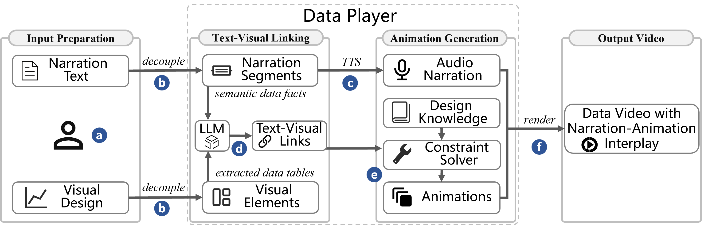

Data Player: Automatic Generation of
Data Videos with Narration-Animation Interplay
Leixian Shen
1, 3
Yizhi Zhang 2, 3
Haidong Zhang 3
Yun Wang*
3
1The Hong Kong University of Science and Technology
2Cornell University
3Microsoft Research Asia
IEEE Transactions on Visualization and Computer Graphics (Proc. IEEE VIS 2023)

Abstract:
Data visualizations and narratives are often integrated to convey data stories effectively. Among various data storytelling formats, data videos have been garnering increasing attention. These videos provide an intuitive interpretation of data charts while vividly articulating the underlying data insights. However, the production of data videos demands a diverse set of professional skills and considerable manual labor, including understanding narratives, linking visual elements with narration segments, designing and crafting animations, recording audio narrations, and synchronizing audio with visual animations. To simplify this process, our paper introduces a novel method, referred to as Data, capable of automatically generating dynamic data videos with narration-animation interplay. This approach lowers the technical barriers associated with creating data videos rich in narration. To enable narration-animation interplay, Data Player constructs references between visualizations and text input. Specifically, it first extracts data into tables from the visualizations. Subsequently, it utilizes large language models to form semantic connections between text and visuals. Finally, Data Player encodes animation design knowledge as computational low-level constraints, allowing for the recommendation of suitable animation presets that align with the audio narration produced by text-to-speech technologies. We assessed Data Player's efficacy through an example gallery, a user study, and expert interviews. The evaluation results demonstrated that Data Player can generate high-quality data videos that are comparable to human-composed ones.
Introduction Video:
Pipeline:

Example Gallery: